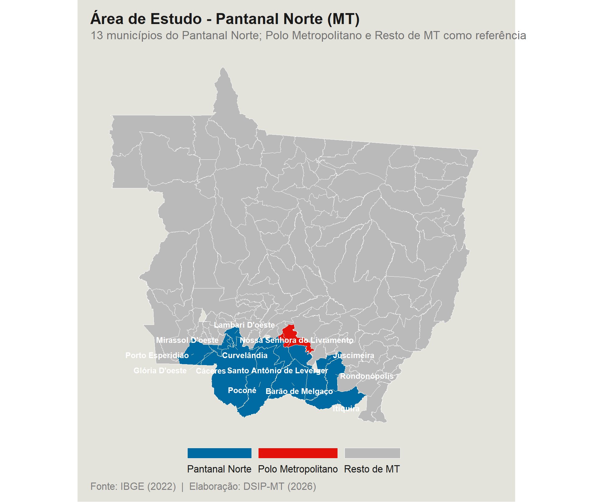
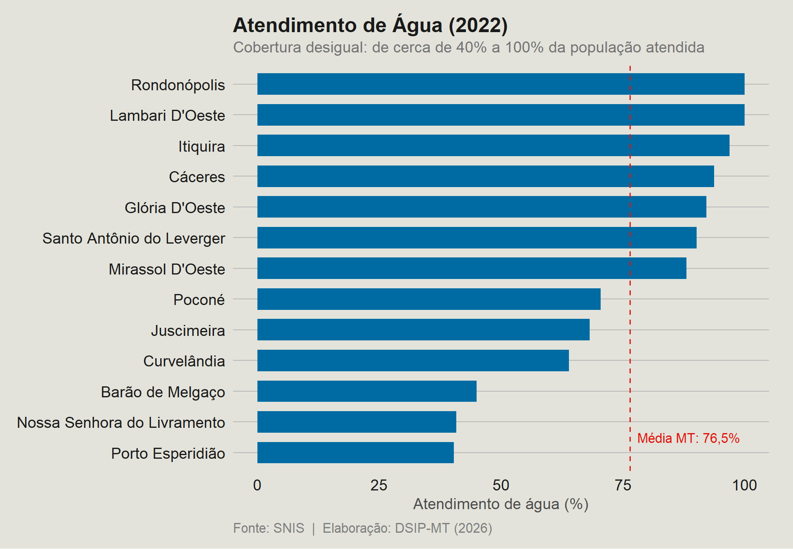
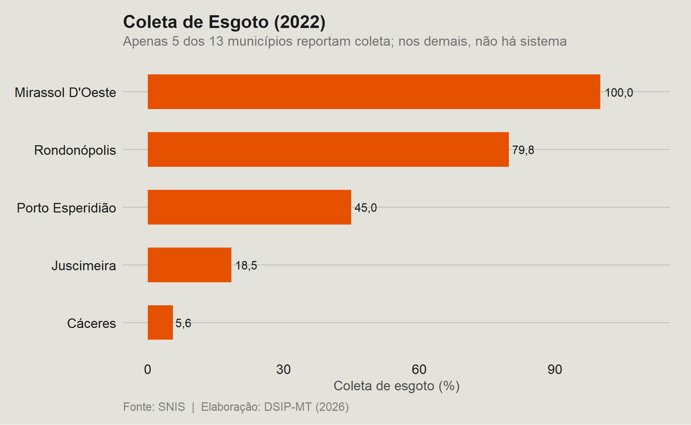
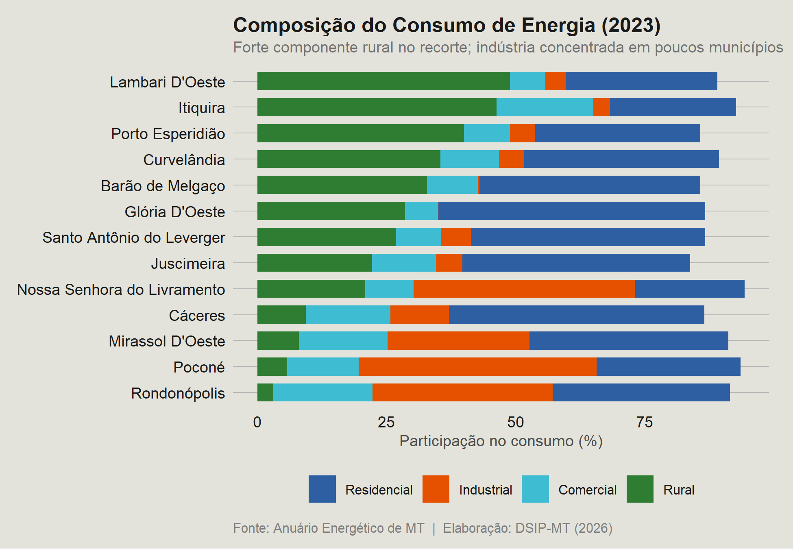
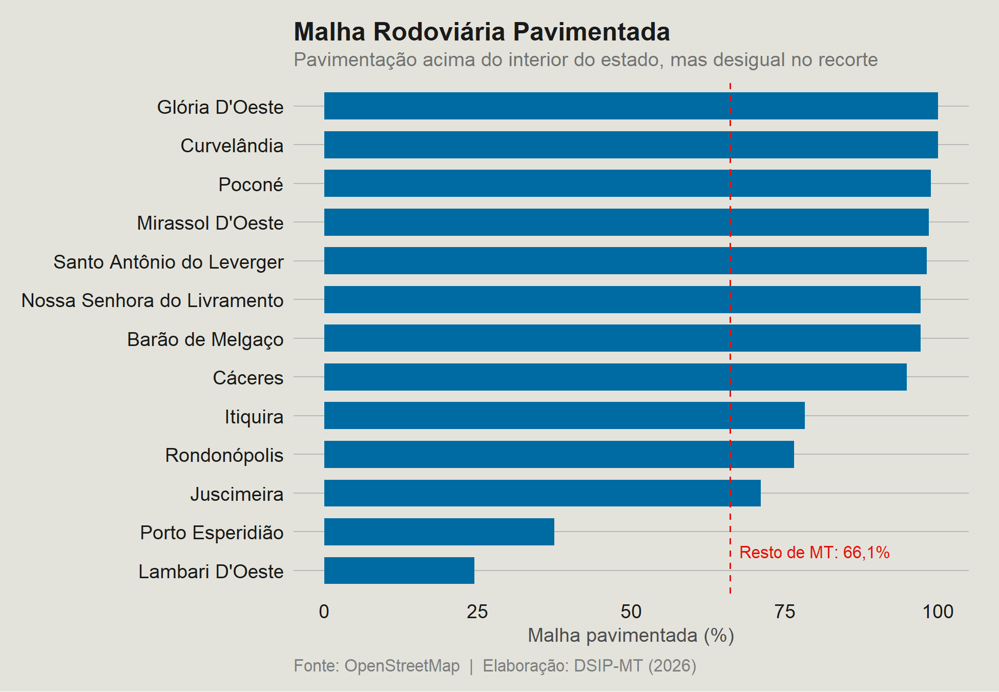
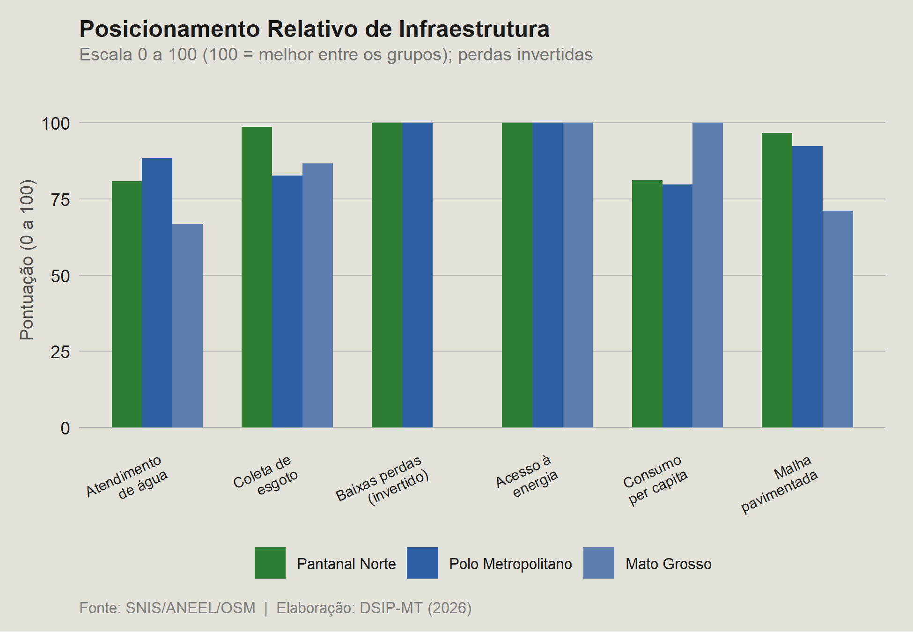

D5 · Infraestrutura (PIM)
Relatório Parcial I — versão congelada de 08/07/2026. Os números vêm das bases tratadas da Fase I.
Principais resultados
O abastecimento de água atendia, em 2022, 76,1% da população em média simples, patamar próximo da média estadual (76,5%), mas com forte desigualdade interna, de 100% em Lambari D’Oeste e Rondonópolis a cerca de 40% em Porto Esperidião. A coleta de esgoto é a maior carência do recorte: apenas 5 dos 13 municípios reportaram coleta ao SNIS em 2022 e, mesmo entre esses, a cobertura média é de 49,8%. As perdas de distribuição de água (36,1% em média simples) superam a média estadual (29,1%). A energia elétrica apresenta o quadro mais favorável, com acesso domiciliar de 98,5% em média simples, e o perfil de consumo é marcadamente rural (25,3% do consumo no setor rural, ante 0,6% no Polo Metropolitano). A malha rodoviária é comparativamente bem pavimentada (82,5% em média simples, ante 66,1% no Resto de Mato Grosso), mas a densidade por habitante é menor (21,1 km por mil habitantes, ante 25,4), com mínimo em Barão de Melgaço.
Fonte do texto: Síntese Executiva dos Relatórios Parciais I, Projeto DSIP-MT (julho de 2026).
Indicadores da dimensão no Pantanal Norte
Mediana dos 13 municípios, mediana de Mato Grosso e os municípios com maior e menor valor no ano de referência. Clique no nome do indicador para ver o mapa e o ranking. Indicadores com o selo OST são dados complementares obtidos no Observatório do Sebrae, fora dos Relatórios Parciais I.
Documentos
Figuras do relatório
Figuras extraídas do Relatório Parcial I, na ordem em que aparecem no documento. A fonte de dados de cada figura consta no rodapé da própria imagem. Clique na imagem para ampliá-la.












Ressalvas metodológicas
Síntese das limitações registradas nas notas metodológicas da dimensão. O texto completo está no PDF das notas.
- O SNIS tem adesão voluntária. A ausência de dado, sobretudo em esgoto, é tratada como achado (município sem sistema informado), e os agregados consideram apenas quem reporta.
- O saneamento é um corte transversal de 2022. Não há série comparável entre todos os municípios, portanto não se infere tendência longitudinal.
- O índice de atendimento urbano de água está vazio para o recorte em 2022. Usa-se o índice de atendimento total.
- O consumo de energia cobre apenas 2023 e o acesso domiciliar é um retrato da ANEEL (ano-fonte 2026). Nenhum dos dois forma série.
- Rondonópolis responde por cerca de 62% do consumo de energia do recorte e distorce a média ponderada. Reportam-se média simples, média ponderada e valores sem Rondonópolis.
- A malha rodoviária vem do OpenStreetMap, colaborativo e estático, e pode estar subestimada em áreas remotas. Os valores devem ser lidos como ordem de grandeza. Um município sem segmento mapeado consta com 0 km.
- Em energia e rodovias, a ausência de dado foi convertida em zero, o que pode confundir “infraestrutura inexistente” com “dado faltante”.
- O painel repete os retratos de energia e rodovias em todos os anos. A análise longitudinal fica restrita às colunas de saneamento.
Dados desta dimensão
Bases tratadas da Fase I em formato CSV (UTF-8), com as colunas descritas no dicionário de variáveis.
- d5_energia.csv — 141 linhas; 27 KB
- d5_painel_pim.csv — 3.807 linhas; 1996-2022; 525 KB
- d5_rodovias.csv — 141 linhas; 15 KB
- d5_saneamento.csv — 2.390 linhas; 1996-2022; 193 KB
- dicionario_D5.csv — dicionário de variáveis da dimensão
Veja os indicadores de cada município em Municípios.